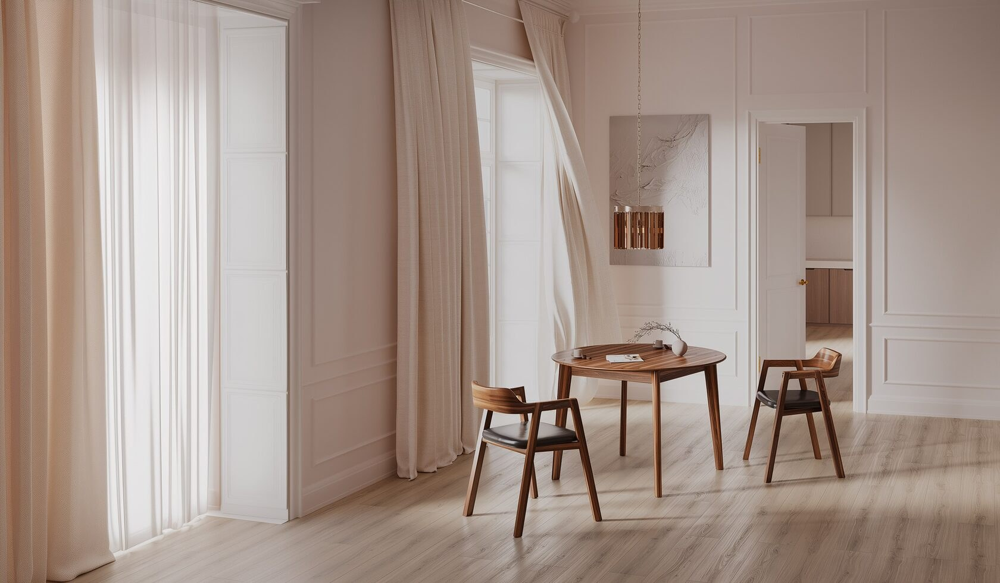
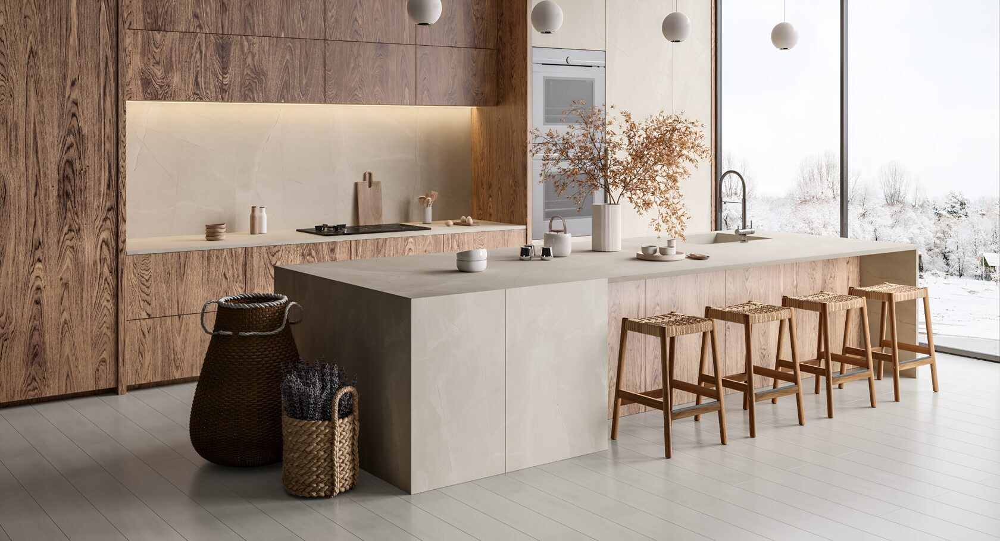
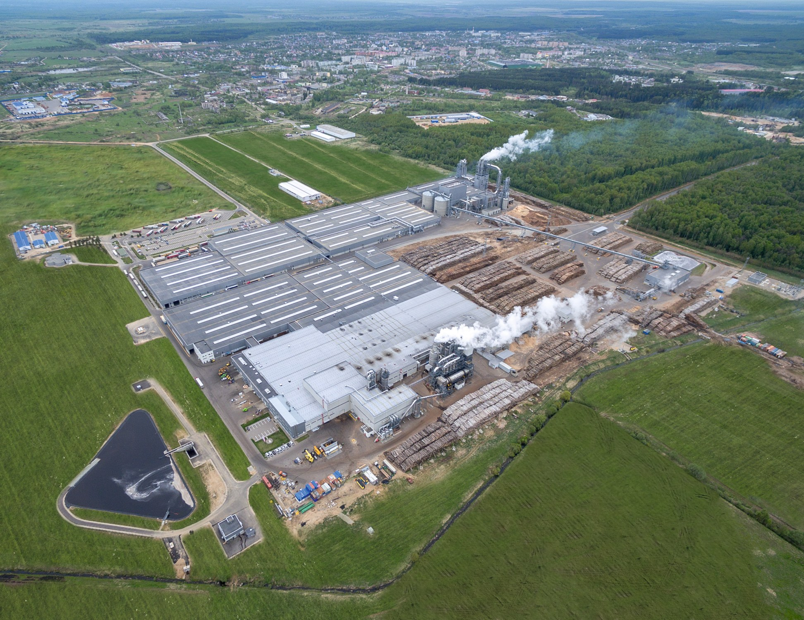
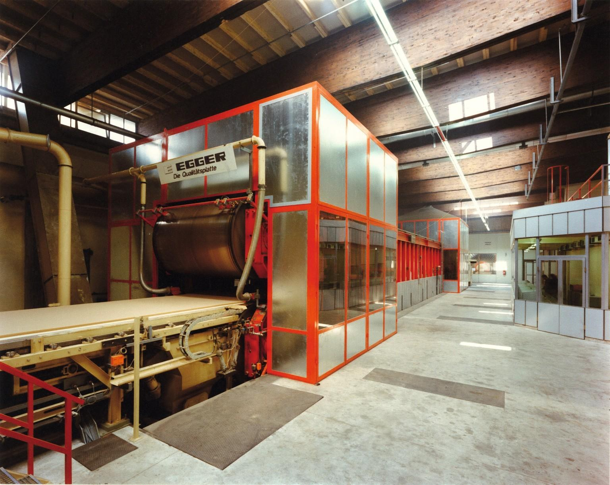
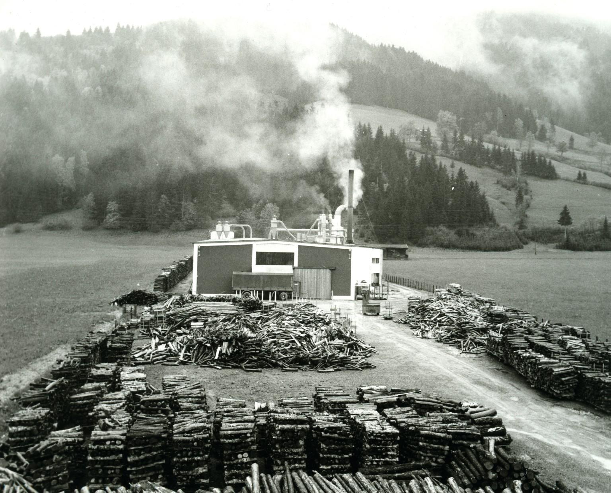

У нового имени —
большая история.
EVERSENSE начинается с ощущения: матовая поверхность, рельеф дерева, спокойный цвет. Но за этим первым впечатлением — десятилетия работы с древесиной и история производства EGGER.
Пройти путь к истокам
Современный характер.
EVERSENSE выпускается на заводе «ЭГГЕР Древпродукт Гагарин». Его история связана с компанией, которая работает с деревом с 1961 года. Чтобы познакомиться с новым брендом, стоит немного отмотать время назад.[1][2]
Сначала вы чувствуете дерево.
Потом узнаёте технологию.
Хороший пол замечаешь не только глазами. Утром — когда встаёшь с кровати. Днём — когда свет скользит по рисунку доски. Вечером — когда дом наконец становится тихим. В EVERSENSE этому повседневному контакту уделено особое внимание.
Официальная коллекция строится вокруг матовых оттенков, выразительных древесных декоров и бархатистых поверхностей. В серии «Тихая роскошь» рисунок и рельеф совпадают: там, где виден сучок или годичное кольцо, поверхность поддерживает это впечатление на ощупь. Красоту здесь можно почувствовать рукой.[3]
*Характеристики заявлены производителем. Условия применения, монтажа и ухода необходимо сверять с документацией выбранного покрытия.[4]
У красоты есть
инженерная сторона
В карточке «Дуб Вирдиа натуральный» за фотографией интерьера стоит вполне конкретная конструкция: доска толщиной 8 мм, размером 1292 × 193 мм, фаска V4 и замок CLIC it!. Там же указаны 34 класс и 72 часа контакта с водой. Это сочетание характеристик помогает оценивать покрытие не только по оттенку.[4]

За брендом стоит конкретное предприятие: на официальном сайте EVERSENSE указан завод в Гагарине, а оператором сайта названо ООО «ЭГГЕР ДРЕВПРОДУКТ ГАГАРИН». Тот же завод и адрес есть в перечне производственных площадок EGGER. Новое имя становится понятнее, когда знаешь его промышленный адрес.[1][2]
Маленький щелчок.
Большая работа.
У замка скромная роль в фотографии интерьера: его вообще не видно. Зато именно он соединяет отдельные доски в единый пол.
С коллекцией EGGER PRO 2021+ компания перешла на систему CLIC it!. Профиль позволял выбирать способ укладки: по одной доске, целыми рядами или с подбивкой. Для покрытий PRO Laminate Aqua+ и PRO Design GreenTec производитель заявлял до 72 часов защиты от проникновения влаги — результат совместной работы поверхности, плиты и соединения.[5]
История ламината меняется не только на поверхности. Иногда важнейшее скрыто на кромке доски.
Сегодня название CLIC it! встречается и в официальных карточках EVERSENSE. Эта связь особенно наглядна: технологию можно проследить по документам, а не только по знакомому имени производителя.[4]
Место, где история
становится вашим полом.
Для этой истории Гагарин — важнейшая точка на карте. Именно здесь промышленная биография EGGER соединяется с адресом производства EVERSENSE.

В корпоративной хронологии EGGER 2016 год отмечен расширением гагаринской площадки: производством MDF и напольных покрытий. Отчёт за 2016/17 год добавляет выразительную деталь: в сентябре 2016-го на российский рынок вышла коллекция из 38 декоров, целиком произведённых в Гагарине.[6][7]
В промежуточном отчёте того же периода компания отдельно упоминает завершение монтажа линии MDF/HDF и производства полов в Гагарине. У современного покрытия есть длинная технологическая предыстория: сначала нужно научиться точно работать с самой основой.[8]
Когда у дерева
стало больше возможностей.
В сентябре 2014 года в Берлине EGGER представила коллекцию ламината 2015–2017. В ней встретились влагостойкая технология aqua+, соединение UNI fit! и длинные доски формата LONG. Коллекция включала 70 декоров и была адаптирована для разных рынков в 11 региональных вариантах.[9]
Для покупателя это означало больше свободы: выбирать не только цвет, но и пропорции доски, фактуру, свойства. Технологическая история пола развивалась сразу в нескольких направлениях — и внешний вид был лишь одним из них.
Сначала — производственная база.
Пятью годами раньше расширения EGGER приобрела уже существующий завод древесно-стружечных плит в Гагарине. Договор был подписан 20 мая 2011 года, а 30 июня предприятие официально перешло к компании.[10]
Это важная подробность: история площадки не начинается с появления новой марки на упаковке. Сначала развивается предприятие, затем добавляются оборудование и направления выпуска — и уже на этой основе появляются новые продукты.
До Гагарина
была Шуя.
В 2005 году у EGGER появилась первая российская производственная площадка — в Шуе, Ивановская область. Гагарин стал следующим шагом развития в стране.[6]
Две точки на карте помогают увидеть масштаб этой истории: речь идёт о последовательном расширении производства на протяжении многих лет.
Новая глава
на Балтике.
В немецком Висмаре EGGER развивает производство OSB и напольных покрытий. В официальной истории компании этот этап датирован 1999 годом.[6]
Сегодня сама EGGER в материале о тридцатилетии своего ламината связывает его начало с Санкт-Йоханном, а современное производство этого направления — с Висмаром. Российская площадка в Гагарине — отдельная часть общей промышленной истории.[11]
Дерево получает
новую профессию.
До появления напольных покрытий компания уже больше трёх десятилетий работала с древесными материалами. Ламинат стал продолжением этого опыта.
В 1995 году EGGER начала выпускать ламинированные напольные покрытия в Санкт-Йоханне в Тироле. В корпоративной хронологии это самостоятельная веха: компания выходит за пределы привычных направлений и делает следующий шаг в устройстве домашнего пространства.[6]
Тепло завода.
Вода в бассейне.
С 1993 года остаточное тепло промывной воды на предприятии в Санкт-Йоханне использовали для обогрева городского бассейна. Эту историю компания сохранила в собственном журнале MORE.[12]
У промышленного производства оказывается очень человеческое продолжение: тепло, которое могло пропасть, становится полезным городу.
Когда производство
научилось не останавливаться.
На предприятии в Санкт-Йоханне заработала линия ContiRoll. Древесно-стружечную плиту стало возможно производить непрерывно; по данным EGGER, суточный выпуск удвоился.[2]

Ламинат появится в ассортименте позже. Но уже здесь виден важный принцип этой истории: развитие готового продукта опирается на то, как производится его материал.
Практичное
становится красивым.
В 1971 году EGGER впервые облицовывает древесно-стружечные плиты декоративным покрытием и выпускает их под названием Edelspan. Компания называет этот шаг выходом на международный рынок.[2]
Это ещё мебельные материалы, не напольные покрытия. Но в истории появляется тема, знакомая нам по современным интерьерам: инженерную основу дополняет работа с поверхностью.
У этой истории есть
даже точное время.
22:00.
В этот вечер на первом предприятии EGGER выпустили первую древесно-стружечную плиту. В начале на заводе работали всего 28 человек.[12]

Для основателя Фрица Эггера древесина была слишком ценным материалом, чтобы просто её выбрасывать. Из этой идеи выросло производство плит — способ дать дереву больше возможностей.[2]
Теперь за рисунком дерева
вы видите историю.
Первую плиту, первые декоры, начало выпуска ламината, развитие площадки в Гагарине. EVERSENSE продолжает этот разговор о дереве — на языке современных поверхностей, дизайна и характеристик, которые важны дома каждый день.
Посмотреть коллекцию EVERSENSEИсточники и подписи к иллюстрациям
- EVERSENSE. Оператор официального сайта; главная страница, раздел контактов. ООО «ЭГГЕР ДРЕВПРОДУКТ ГАГАРИН»; адрес завода: Гагарин, Эжвинский проезд, 1.
- EGGER. О компании, площадки и история. 1961, Edelspan 1971, ContiRoll 1988; сведения о заводе в Гагарине. Отсюда взяты фотографии первого завода, пресса и гагаринской площадки.
- EVERSENSE. Официальная презентация; каталог коллекции. Поверхности, совпадение рельефа и рисунка в серии «Тихая роскошь», слои покрытия. Отсюда взяты интерьерные изображения.
- EVERSENSE. Дуб Вирдиа натуральный, EL1038. Замок CLIC it!, 34 класс, 72 часа контакта с водой, геометрия и фаска. Характеристики приведены по официальной карточке; это не утверждение о пригодности для любого помещения.
- EGGER. PRO Flooring Collection 2021+. Система CLIC it! и свойства продуктов Aqua+/GreenTec в этой коллекции.
- EGGER. Корпоративная брошюра, раздел Milestones. Выпуск ламината в 1995-м; Висмар 1999; Шуя 2005; приобретение Гагарина 2011; расширение 2016.
- EGGER. Годовой отчёт 2016/17, печатная стр. 37. Коллекция из 38 декоров, произведённых в Гагарине, сентябрь 2016 года.
- EGGER. Промежуточный отчёт за 2016/17, стр. 34. Завершение монтажа MDF/HDF и производства напольных покрытий в Гагарине.
- EGGER. Журнал MORE №6, Exclusively under its own name. Презентация коллекции 2015–2017 в сентябре 2014 года, aqua+, UNI fit!, LONG, 70 декоров и 11 региональных вариантов.
- EGGER. Годовой отчёт 2010/11. Даты сделки по приобретению предприятия в Гагарине.
- EGGER. 30 years of laminate flooring. Истоки в Санкт-Йоханне и современная роль Висмара. Характеристики NatureSense из этого материала на EVERSENSE не переносятся.
- EGGER. Журнал MORE №1, печатные стр. 26–31. Первая плита 18 декабря 1961 года в 22:00, 28 сотрудников, собственное производство клея в 1963-м и обогрев бассейна с 1993-го.
Материал подготовлен по официальным источникам. «Сегодня» обозначает современный продукт, а не подтверждённую дату запуска бренда. История группы EGGER, её технологий и российской площадки показана с указанием соответствующего контекста. Интерьеры — презентационные материалы бренда; архивные и производственные фотографии — материалы EGGER.